Day 9.. rain, small Town museum, Mountain bluebirds, and more big hills
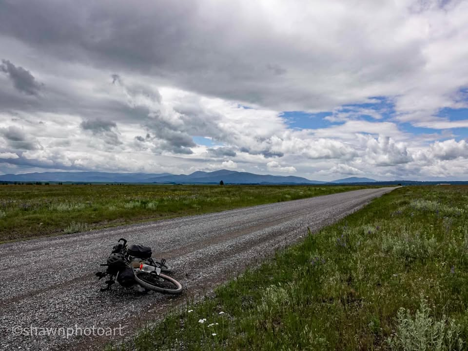
From the Journey
Early morning rain was not exactly the shower I was looking for, but it’s the one I got. Luckily, after putting my tent away, there was a dry spot under the tree where I was able to cook some coffee and hang out with some camp mates, Adam and John, before I got on the road.
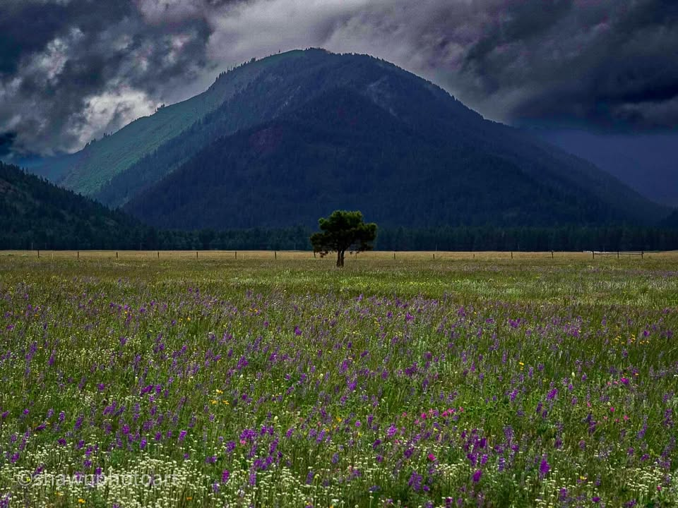
From the Journey
The drizzle was coming down constant, which made the roads, wet and sloppy. I almost crashed in the mud on more than one occasion. It was a 20 mile ride to the next town where I kept telling myself I’m gonna make a decision whether I’m spending the night there or not. It’s a funny thing when you’re battling your own emotions for comfort. I went through all the reasons why I should stay in the next town. And still didn’t make a decision until I got into town.
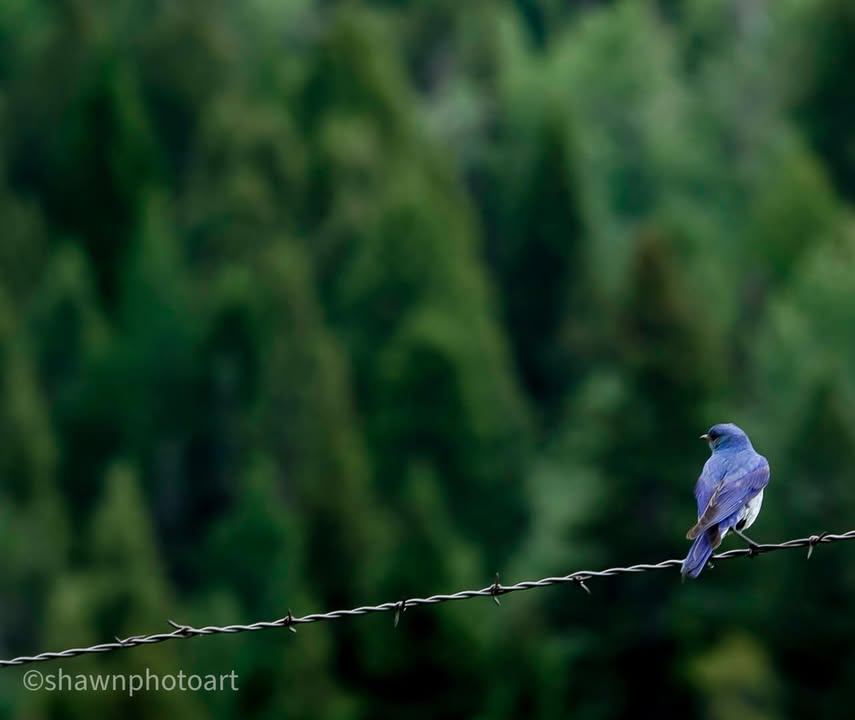
From the Journey
When I pulled into town, my legs were all muddy and had mud covering the bottom half of my bike. This town caters to bikers that are coming through. There was a rack where I could wash The filth of the trail. They have little outhouses, teepees, and Chuck wagons available for bike travelers to stay in for free. There’s a small hotel above the grocery store and Nice small town diner. In between those three little spaces, there is a two room museum that had lots of historical memorabilia from this area. The lady who ran the museum, put a fire on and offered it to all of the bikers, who wanted to sit around it. She was very hospitable.
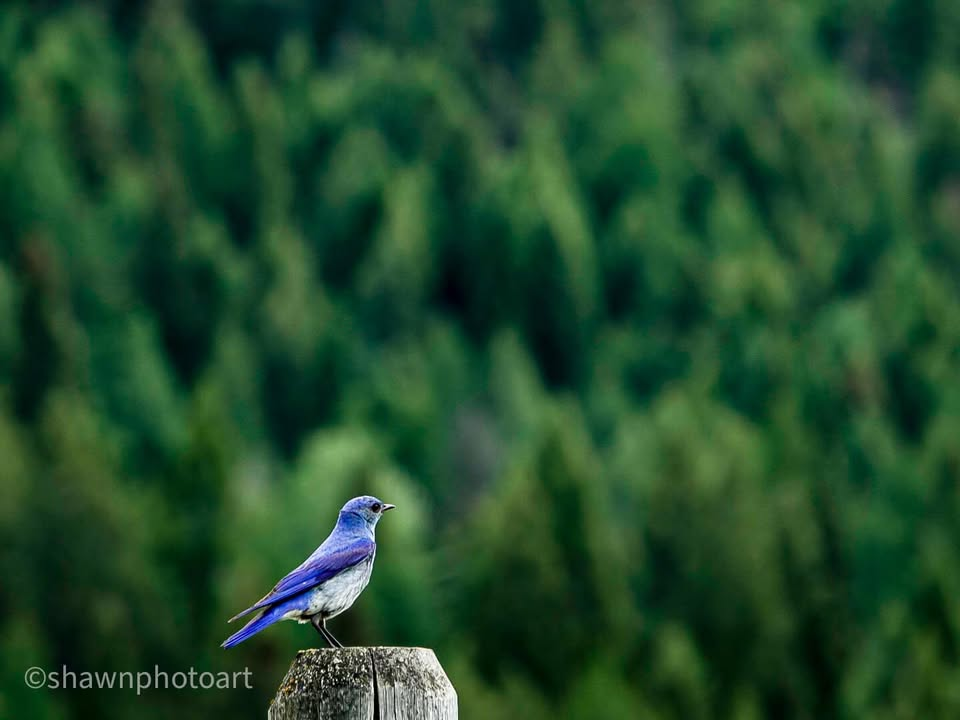
From the Journey
After hosing my lower legs off of mud, I grabbed a beer, a soda and a danish, and moved in by the fire to dry off. The warmth of the fire made me feel human again. It’s amazing how fires can do that. Looking around the museum they had lots of old pictures and memorabilia. If you’re in this neck of the woods, I definitely recommend stopping in. It’s also one of those museums where you could touch. They had two walls filled with old ladies hats that you could try on if you’d like. The caretaker of the museum explains the population of the area is about 95 people maybe getting into the 200s if you were included some of the outlying ranches. This is the “good town” I should’ve tried to get to the day prior and failed. The townspeople definitely took good care of the bikers that came through.
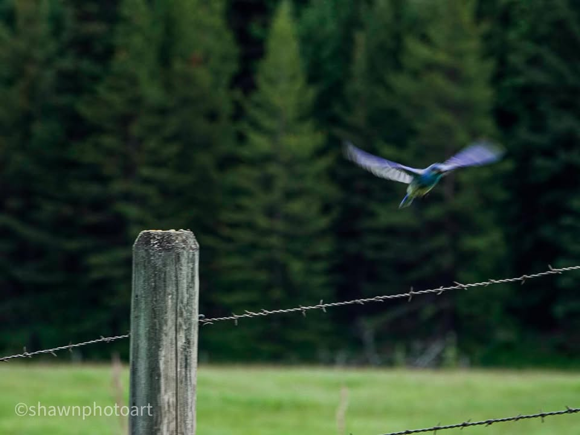
From the Journey
Small grocery with the hotel above it still has the horse hitching post in front of it. But instead of hitting up your horse, I hitched up my bicycle. Except for the tiny little bike shorts, felt like a real cowboy lol
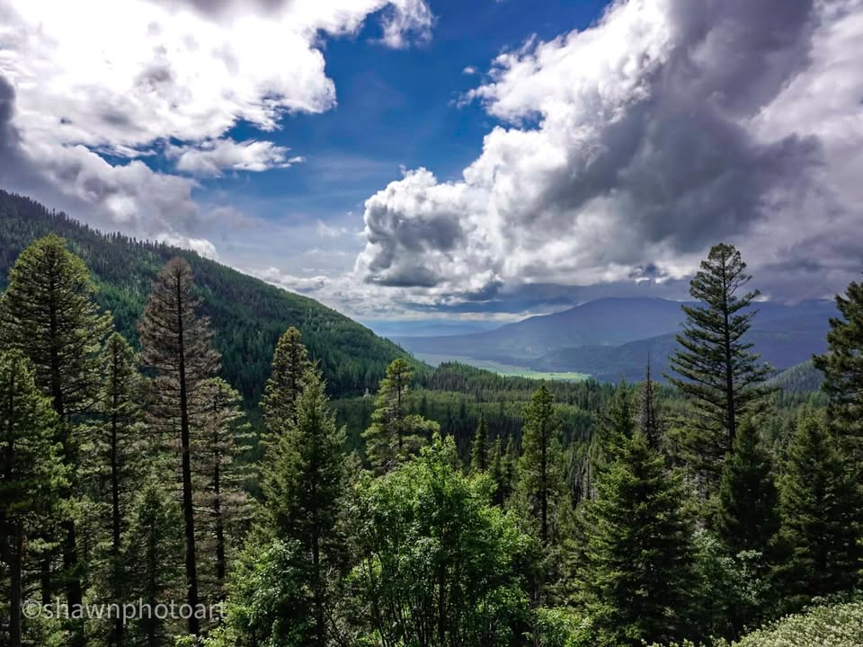
From the Journey
After spending my time by the fire, and grabbing a quick meal, I cleaned off my bike and decided I was going to make it onto the next town, another 40 miles.
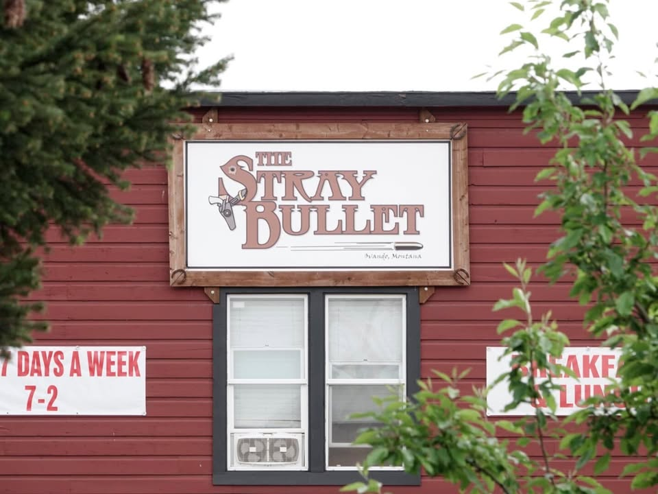
From the Journey
The first couple days on the trails in Montana I was on a dirt road surrounded by thick woods and didn’t get quite as good of you as I would’ve liked to. However, coming into this part of Montana, it’s quite a bit different.
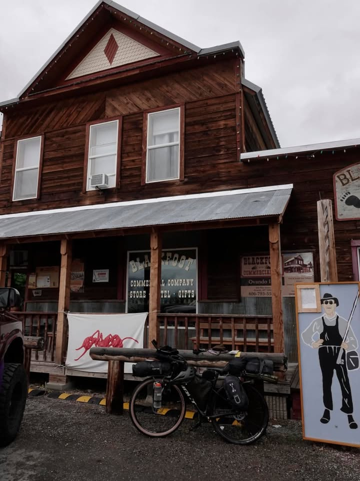
From the Journey
As I ride out of town, I’m surrounded by ranch fields dotted by Pine trees, hills, and mountains in the distance. Happy grass fed cows look at me as I ride by. The road stretches on to a great flat area which stretches out for miles and miles. I really like this area not just because it was flat, but Lent itself to some pretty good pictures when the sun was cooperating.
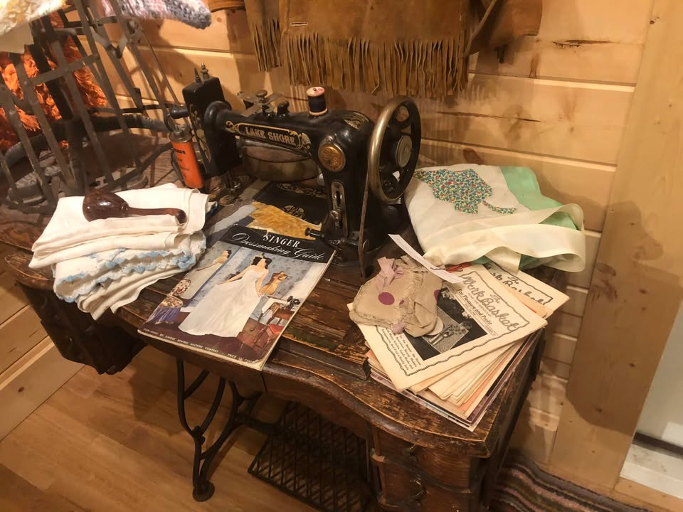
From the Journey
From fence post to fence post I kept seeing bright blue birds defending their little territories. Trying to get a picture of these little guys was pretty tough, but eventually during a map check I had one bird that wanted to pose for me. Later I found out these were mountain bluebirds.
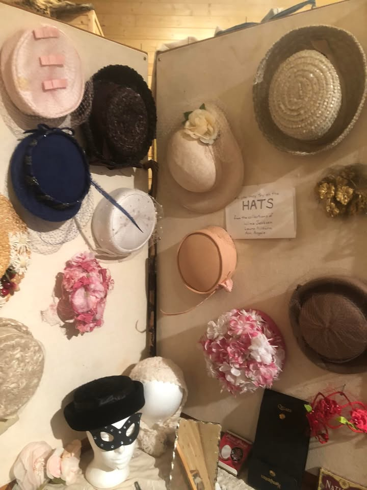
From the Journey
This particular days climb wasn’t as bad as the day prior. It was almost a 6 mile climb with 1400 feet of elevation gain. This made the incline pretty low so I could steadily pedal up it. It took me about an hour and a half. The views from the top of this perch were spectacular.
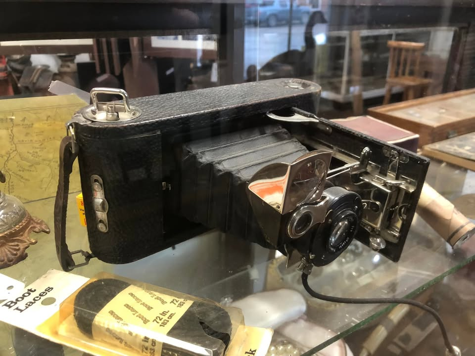
From the Journey
I made it into the next town of Lincoln where the first two hotels I tried we’re full. However I found one that had a bar restaurant in it that was open. I haven’t had a shower in about five days and it feels amazing. I was able to dry my tent out, get a steak, dinner and beer, and hang out with some other locals at the bar.
The one big negative as I thought I was gonna get able to do some laundry but their laundry machine kept failing on me. I was only able to dry my clothes. The next big town I’ll be going into is the capital and I should be able to get my clothes washed there along with getting the bike crank I ordered.
One more days ride and I’ll be on to my third map set. I’ll be 2/7 of the way complete.
https://shawnhansen.artstorefronts.com/warehouse-panoramics/art_print_products/montana-moutain-blue-bird?product_gallery=173099&product_id=6237662